From a REST API to MCP tools
Part 1: a calculator API. Part 2: an API that loads 5,664 substation readings from an uploaded CSV and answers questions about them. Part 3: the same logic as MCP tools, connected to Cursor.
1. Today's plan: REST first, then MCP
We build two small REST APIs, then — in Part 3 — open the same logic to AI apps such as Cursor with MCP. Each part adds one idea:
| Part | What we build | The new idea |
|---|---|---|
| 1 · Calculator API | Two numbers and one operation in, the answer out | An API: GET and POST, inputs, JSON, /docs, status codes 200 / 400 / 422 |
| 2 · Readings API | Upload a CSV of 5,664 substation readings through the API, then ask questions | A file upload, checking every row, a database, query endpoints, 404 |
| 3 · MCP | The same two APIs as MCP tools, connected to Cursor | Tools an AI app can discover and call — REST and MCP side by side |
The rule for the whole workshop: logic in plain Python functions (calculator.py, readings.py); an API file (1_calculator_api.py, 3_readings_api.py) only receives requests, calls a function and returns its answer.
Everything is in one folder, code/. The numbers are the order: 1_ … 5_ are what you run. calculator.py, readings.py and db.py have no number because the APIs import them — and Python can't import a name that starts with a digit.
| File | What it is | How you use it |
|---|---|---|
1_calculator_api.py | Part 1: the calculator REST API, on port 8000 | python 1_calculator_api.py |
2_test_calculator.py | Part 1: every case, with the replies | python 2_test_calculator.py (second terminal, API running) |
3_readings_api.py | Part 2: the readings REST API (upload + questions), on port 8001 | python 3_readings_api.py |
4_upload_csv.py | Part 2: uploads the CSV to the running API | python 4_upload_csv.py (second terminal) |
5_test_readings.py | Part 2: every endpoint, including refusals | python 5_test_readings.py (second terminal, API running) |
calculator.py, readings.py, db.py | The logic and the database — imported by the APIs | Read them; python calculator.py runs a quick check |
6_mcp_server.py | Part 3: the same logic as 5 MCP tools, on port 8002 | python 6_mcp_server.py http |
7_list_api_and_tools.py | Part 3: the REST endpoints and the MCP tools, side by side | python 7_list_api_and_tools.py |
8_test_mcp.py | Part 3: every tool of the running MCP server | python 8_test_mcp.py (second terminal, MCP running) |
9_mcp_on_the_wire.py | Part 3: the four JSON-RPC messages, by hand | python 9_mcp_on_the_wire.py (MCP running) |
10_mcp_ui.py | Part 3: a Streamlit UI — the list of tools, and a form to call each one | streamlit run 10_mcp_ui.py (MCP running) |
cursor_mcp.json, cursor_mcp_stdio.json | Part 3: connect Cursor to the MCP server | Copy one to .cursor/mcp.json |
campus_feb_mar_2026.csv, readings_with_problems.csv | The data to upload: 5,664 rows, and 9 rows with mistakes | Upload through the API |
| Server | Port | Start it |
|---|---|---|
| Calculator API (Part 1) | 8000 | python 1_calculator_api.py |
| Readings API (Part 2) | 8001 | python 3_readings_api.py |
| MCP server (Part 3) | 8002 | python 6_mcp_server.py http |
Set up once (from the v2/ folder):
2. Part 1 · Step 1 — The logic: calculator.py
What you will learn
- A function that does one job and refuses what it can't do (
ValueError) - Why the logic lives in its own file, with no web code
🎯 Problem statement
Everyone needs quick calculations, but a script on one laptop helps only the person at that keyboard.
- Given
- two numbers and an operation
- Find
- the answer, available to any program on the network
- Rules
- only add, sub, mul, div; dividing by zero is refused with a clear reason
▶ Output
3. Part 1 · Step 2 — The calculator as a REST API: 1_calculator_api.py
What you will learn
app = FastAPI()and@app.get("/calculate"): a function gets a web address- GET (inputs in the address) and POST (inputs in a JSON body) — the same answer
Literal[...]and a pydantic class: the API refuses bad input before your code runs
✍️ Try it yourself
- Open http://127.0.0.1:8000/calculate?a=12&b=3&op=div — the answer is JSON
- Open /docs: FastAPI wrote it from
1_calculator_api.py. Click GET /calculate → Try it out → Execute - In POST /calculate, edit the JSON body to
{"a": 7, "b": 6, "op": "mul"}and execute - Try
op=pow, thenb=0withdiv: two different refusals — see the next step
4. Part 1 · Step 3 — Test it, and read the status codes
Leave the API running and open a second terminal. The test calls the running API over HTTP, as any other program would:
▶ Output
| Status | Means | Who said no |
|---|---|---|
| 200 OK | Here is the answer | — |
| 400 Bad request | The request was fine, but the values can't be done (1 ÷ 0) | Our function (ValueError → HTTPException) |
| 422 Unprocessable | The request broke the endpoint's rules (op=pow, a=twelve, b missing) | FastAPI, before our code ran |
Why GET and POST both? GET is easy to try in a browser. POST with a JSON body is how most programs send inputs — and it's the exact shape an MCP tool's arguments will have in Part 3: {"a": 12, "b": 3, "op": "div"}.
5. Part 2 · Step 1 — The data, and where it's kept
What you will learn
- A CSV of 5,664 readings: one every 15 minutes for two months
- A database table (SQLite) described as a Python class
🎯 Problem statement
The substation's meter readings arrive as a CSV file. People need answers — was the transformer overloaded on 23 March? — without opening a spreadsheet.
- Given
campus_feb_mar_2026.csv(5,664 rows) andreadings_with_problems.csv(9 rows with mistakes), incode/- Find
- an API that loads the file when it's uploaded, keeps it in a database and answers questions about it
- Rules
- check every row; report what was refused and why; never store a half-checked file
| Column | Meaning | Range in the data |
|---|---|---|
timestamp | When the reading was taken (every 15 min) | 1 Feb – 31 Mar 2026 |
load_kw | Power the whole campus is using | 162 – 891 kW |
solar_kw | Power the rooftop solar makes | 0 (night) – 384 kW |
ambient_c | Air temperature | 11.5 – 38.9 °C |
irradiance_wm2 | Sunlight on the panels | 0 – 1,049 W/m² |
The readings are generated, not real (fixed seed — everyone gets the same numbers), with no client or personal data.
6. Part 2 · Step 2 — The logic: readings.py
What you will learn
- Checking every row of an upload: columns, dates, numbers, physical limits, duplicates
- Answering questions from the database: what's loaded, one day, the worst days
- Transformer loading %: (load − solar) ÷ 0.93 ÷ 630 kVA → NORMAL / HIGH (> 80 %) / OVERLOAD (> 100 %)
Two kinds of "no". ValueError means the request can't be done (a 30-day range, a wrong file) and NotFound means the data isn't there (a day with no readings). The API turns them into 400 and 404.
7. Part 2 · Step 3 — The readings API: 3_readings_api.py
| Method | Endpoint | Inputs | What it does |
|---|---|---|---|
| POST | /readings/upload | a CSV file; replace (true / false) | Load the file — every row checked. Returns a report |
| GET | /readings/stats | — | How many readings are loaded, from when to when |
| GET | /readings | start, end | The raw rows — at most 7 days at a time |
| GET | /summary | day | One day: peak load, energy, solar, peak loading %, status |
| GET | /peak-days | top (1–31) | The days the transformer worked hardest |
| DELETE | /readings | — | Remove everything — to start again |
Two APIs, two ports. The calculator uses 8000 and the readings API uses 8001, so both can run at the same time. Open the readings API at http://127.0.0.1:8001/docs. 4_upload_csv.py and 5_test_readings.py use 8001 and check that they found the Readings API before sending anything.
8. Part 2 · Step 4 — Load the data through the API
Three ways to send the same file to POST /readings/upload. Each one is a client of the API:
✍️ Try it yourself
- In /docs: open :8001/docs → POST /readings/upload → Try it out → Choose file →
code/campus_feb_mar_2026.csv→ Execute. The report says 5,664 loaded, 0 refused - Now upload
readings_with_problems.csv: 3 loaded, 6 refused — read why, line by line - Upload the big file again with
replace = false: 0 loaded, 5,664 already there — nothing is added twice - Then GET /summary with
2026-03-23→ 106.4 %, OVERLOAD
From a program — the API must be running (in a second terminal):
From the terminal with curl:
The data survives a restart. It's in readings.db, in code/. Stop uvicorn, start it again, and GET /readings/stats still says 5,664.
9. Part 2 · Step 5 — Test every endpoint
With the readings API running (first terminal), run the test in a second terminal. It empties the database first and ends with the 5,664 readings loaded again:
▶ Output
| Status | Here, when |
|---|---|
| 201 Created | An upload was accepted — the report lists any rows refused |
| 400 Bad request | Not a .csv, wrong columns, or more than 7 days asked for |
| 404 Not found | No readings for that day |
| 422 Unprocessable | The request broke the endpoint's rules (top=0, a date that isn't a date) |
10. Part 3 · Step 1 — What we add to make it MCP: 6_mcp_server.py
What you will learn
- MCP (Model Context Protocol): how an AI app asks a server "what can you do, and what do you need?"
- What we add to REST to make it MCP: one library, one file, one decorator per function
- Not every endpoint becomes a tool: an AI reads; changing data stays with a person
Our two APIs are for people and programs: someone reads /docs and knows which URL to call. An AI app (Cursor, Claude, VS Code Copilot) needs to ask the server what it can do — and get names, descriptions and argument rules it can use. That is MCP. We add one file; calculator.py, readings.py and db.py don't change.
REST (1_, 3_) | MCP (6_mcp_server.py) | |
|---|---|---|
| Library | fastapi, uvicorn | mcp (in requirements.txt) |
| The server object | app = FastAPI(...) | mcp = MCPServer("campus-energy-v2", ...) |
| Publish a function | @app.get("/summary"): a method and a URL | @mcp.tool(): just a name, day_summary |
| Inputs and limits | Type hints, Query(...), Literal | The same type hints, with Field(description=...) |
| What a client reads | /docs, for a person | tools/list: name, docstring, JSON Schema — for an AI app |
| The docstring | Optional | Essential: it is all the AI knows about the tool |
| Saying "no" | HTTPException(400 / 404) | ToolError(...) → isError: true and the reason |
| Port | 8000 and 8001 | 8002, at /mcp |
Each read endpoint becomes a tool with a name — and the two that change data don't:
| REST endpoint | MCP tool | Same function |
|---|---|---|
GET /calculate, POST /calculate | calculate | calculator.calculate |
GET /readings/stats | readings_stats | readings.stats |
GET /readings | get_readings | readings.get_readings |
GET /summary | day_summary | readings.summary |
GET /peak-days | peak_days | readings.peak_days |
POST /readings/upload, DELETE /readings | — (REST only) | They change data: a person does that, not an AI |
Say "no" with ToolError. If a tool lets an ordinary error escape, the AI app sees only "Error executing tool day_summary", without the reason. refused_as_tool_error() passes on "no readings for 2026-05-01" instead. Status codes (400, 404) are a REST idea; MCP says isError and why.
Load the data first. The MCP tools read the same readings.db that POST /readings/upload fills (Part 2). No upload, no readings — and readings_stats says 0.
11. Part 3 · Step 2 — The two lists: REST endpoints and MCP tools
▶ Output
REST has 9 endpoints across two APIs; MCP has 5 tools. Same functions — but only the ones an AI should use.
12. Part 3 · Step 3 — Test every tool, as an AI app would
With the MCP server running (python 6_mcp_server.py http) — and, to compare, the readings API too — run in a second terminal:
▶ Output
| REST says | MCP says |
|---|---|
| 200 and JSON | isError: false and the result |
| 400 / 404 — our function refused | isError: true and the reason (ToolError) |
| 422 — the request broke the rules | isError: true — the schema refused it, our code never ran |
13. Part 3 · Step 4 — MCP on the wire: four messages
Client(...) hides the protocol. Underneath, every MCP client — Cursor, MCP Inspector, 8_test_mcp.py — sends the same four JSON-RPC messages, each an HTTP POST to /mcp:
| # | method | What it does | What comes back |
|---|---|---|---|
| ① | initialize | Agree the protocol version | The server's name and abilities, and an mcp-session-id response header, sent back on every later message |
| ② | notifications/initialized | "I'm ready." No id: a notification | HTTP 202, empty |
| ③ | tools/list | "What tools do you have?" | Each tool's name, description and JSON Schema — from the type hints |
| ④ | tools/call | Run one tool with its arguments | The result, with isError |
▶ Output
stdio or HTTP? Over HTTP (python 6_mcp_server.py http) you start the server and give the app its URL. Over stdio (python 6_mcp_server.py stdio) the AI app starts the server itself and talks through stdin/stdout — no port, no session header: the process is the session.
14. Part 3 · Step 5 — Connect Cursor, and see all five tools
✍️ Try it yourself
- Load the data if you haven't (Part 2):
python 3_readings_api.py, thenpython 4_upload_csv.py - Start the MCP server and leave it running:
python 6_mcp_server.py http - Copy
cursor_mcp.jsonto.cursor/mcp.jsonin the folder you opened in Cursor (or~/.cursor/mcp.jsonfor every project) - Open Cursor's settings → Tools & MCP (newer versions: Customize in the sidebar):
campus-energy-v2shows a green dot. Switch it on — it lists the 5 tools - In the chat (Agent mode) ask "Was the transformer overloaded on 23 March 2026?" — Cursor proposes
day_summarywithday: "2026-03-23"; approve it → 106.4 %, OVERLOAD - Ask "What is 12 divided by 3?" →
calculate. Then "Which 3 days were worst?" →peak_days - Ask "Delete all the readings" — there is no such tool, so Cursor can't. That is on purpose
Not working? A red dot or no tools: the server isn't running, or the URL isn't exactly /mcp on port 8002. Changed the code? Restart the server, then switch it off and on in Cursor. Cursor's side: Output panel (Cmd+Shift+U) → MCP Logs. No terminal at all: cursor_mcp_stdio.json makes Cursor start 6_mcp_server.py itself (full paths).
REST and MCP: the difference in the UI.
| REST — /docs (Swagger) | MCP — Cursor / MCP Inspector | |
|---|---|---|
| The list | Endpoints by URL and method | Tool names and descriptions |
| How you call it | You pick the endpoint, fill the boxes, press Execute | You type a sentence; the model picks the tool and fills the arguments; you approve |
| What comes back | A status code and JSON | A result with isError; the model puts it in words |
| Try it without an AI | /docs | MCP Inspector: npx -y @modelcontextprotocol/inspector → http://127.0.0.1:8002/mcp |
Claude Code connects to the same server. One command in code/ writes .mcp.json — already in the folder, so everyone who opens it gets the server:
Why "Pending approval"? A project's .mcp.json could point anywhere, so Claude Code asks you once before it connects. Approve it in claude (or /mcp inside it). The screens are in the last step.
15. Part 3 · Step 6 — A UI for the tools: 10_mcp_ui.py
What you will learn
- A Streamlit page that is an MCP client: it lists the tools (
tools/list) and calls one (tools/call) - Forms built from each tool's JSON Schema — the page knows nothing about our tools in advance
- The difference from Cursor: here you pick the tool and fill it; in Cursor the model does
Cursor and Claude Code show the tools to a model. This page shows them to you: every tool the server offers, its inputs and description, and a form to call it. Each field comes from the schema — enum becomes a drop-down, integer with minimum/maximum a number box with limits, format: date a date picker. Point it at any MCP server and it works the same.
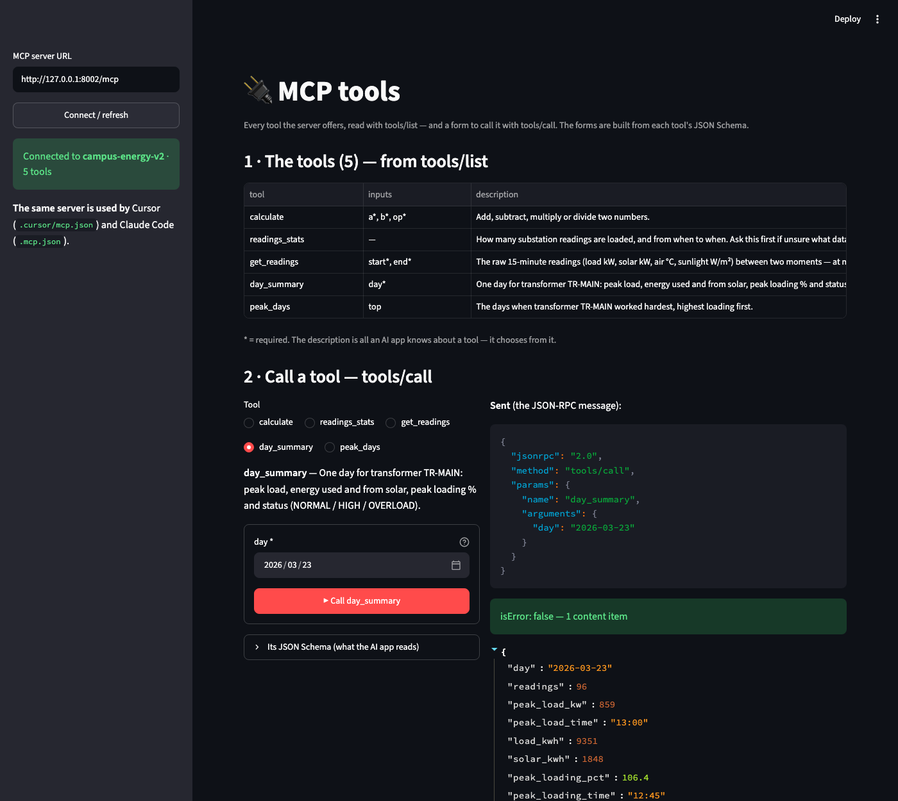
tools/list; day_summary chosen, its date filled, called → the JSON-RPC message sent, isError: false, and 23 March's numbers (106.4 %).✍️ Try it yourself
- Call calculate with a = 12, b = 3, op = div → 4.0. Then b = 0 →
isError: true— cannot divide by zero - Call day_summary for 2026-05-01 → no readings for 2026-05-01
- Call get_readings for 12:00 → 13:00 on 23 March (4 rows); then set
endto April → refused: at most 7 days - Open Its JSON Schema under a form — that is exactly what Cursor's model reads to choose and fill the tool
- Stop the MCP server and press Connect / refresh — one clear line: Nothing is running at …
16. 📝 Check yourself
Check yourself — answers are explained after you submit.
17. Testing screens — every part, run for real
What you should see at each step. Every screen is a real run on the workshop laptop — the APIs on 8000 and 8001, the MCP server on 8002.
Part 1 · Calculator API (port 8000)
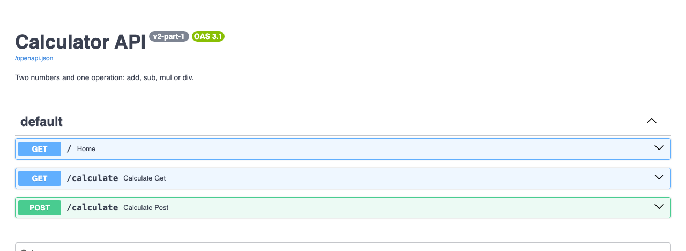
http://127.0.0.1:8000/docs — FastAPI wrote this page from 1_calculator_api.py: one GET and one POST for /calculate.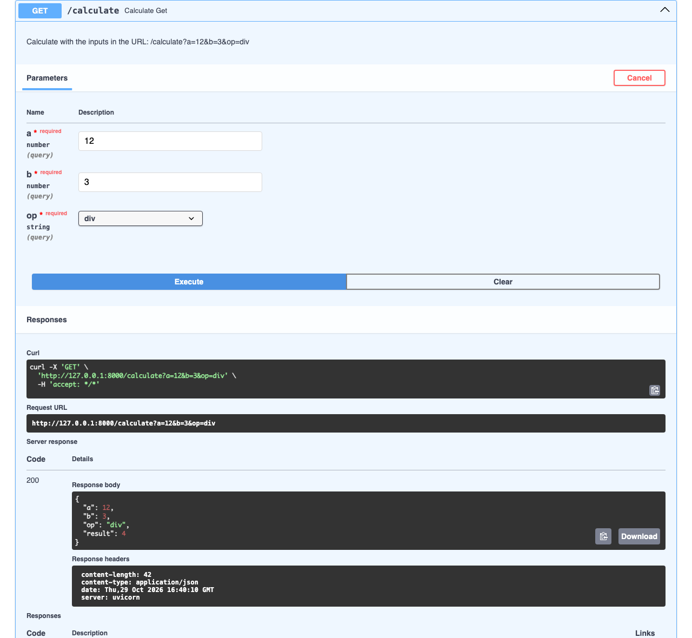
"result": 4. The curl line shows the same request for a terminal.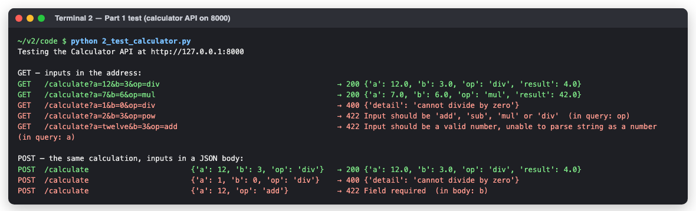
python 2_test_calculator.py in a second terminal: 200 for answers, 400 when our function refuses (÷ 0), 422 when FastAPI refuses the request.Part 2 · Readings API (port 8001)
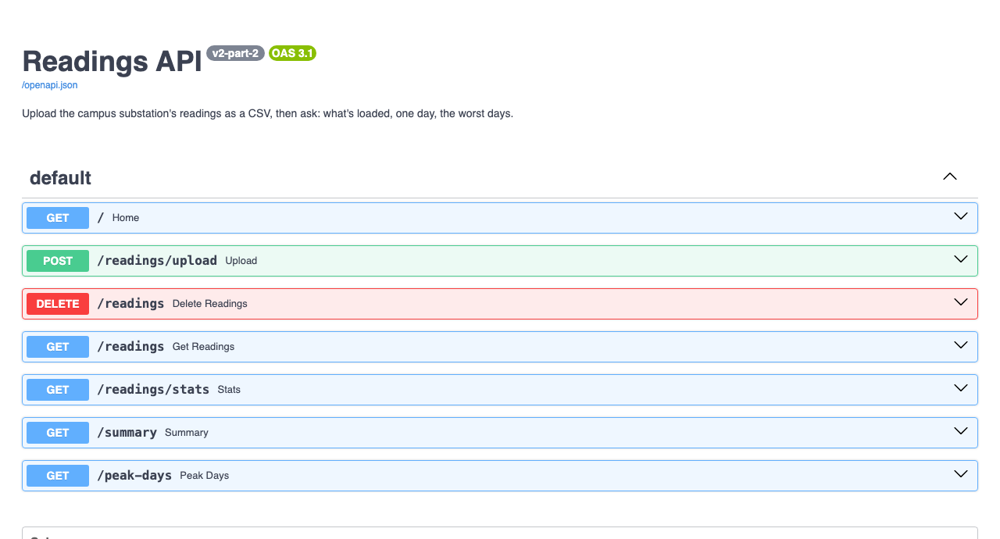
http://127.0.0.1:8001/docs — six endpoints: upload, delete, and four that answer questions.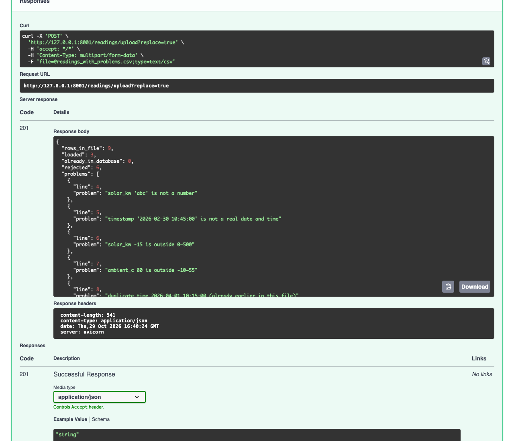
readings_with_problems.csv: 201 — 3 loaded, 6 refused, each with its line and reason.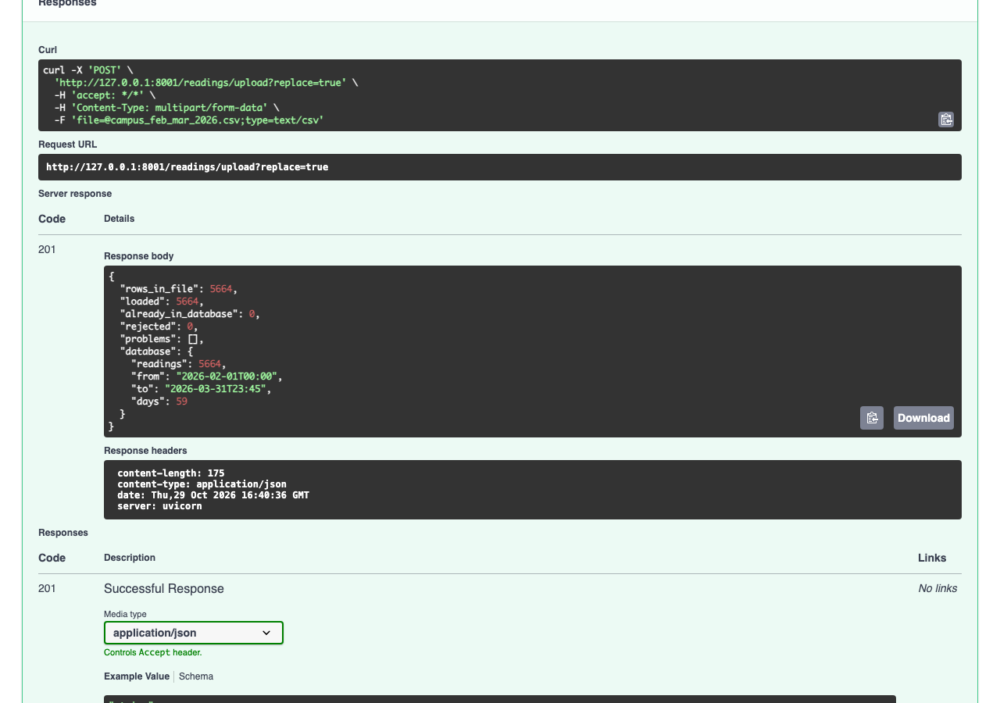
campus_feb_mar_2026.csv: all 5,664 readings loaded, 1 Feb → 31 Mar.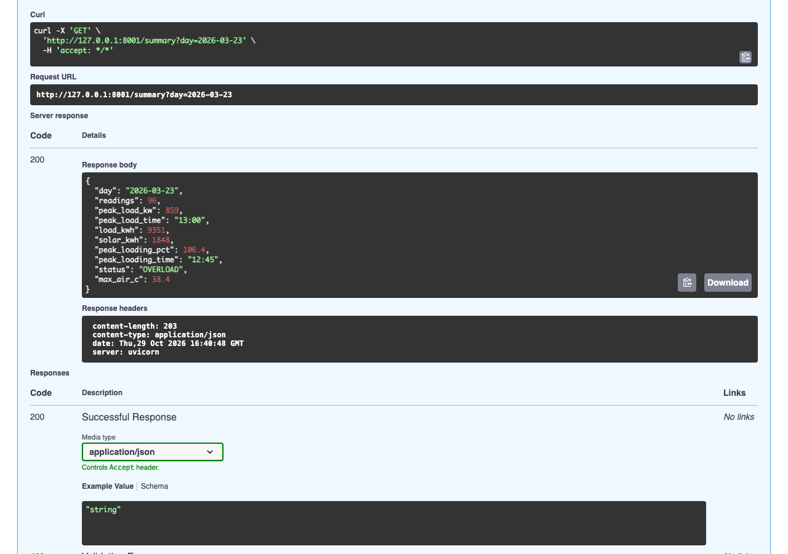
2026-03-23: peak loading 106.4 % at 12:45 — OVERLOAD.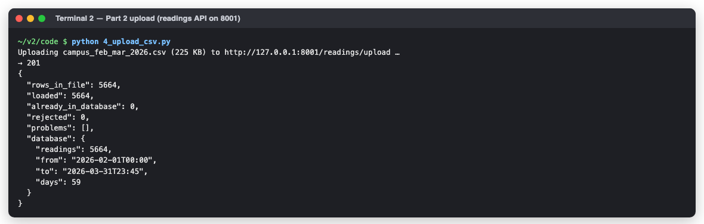
python 4_upload_csv.py — the same upload from a program: it first checks it found the Readings API.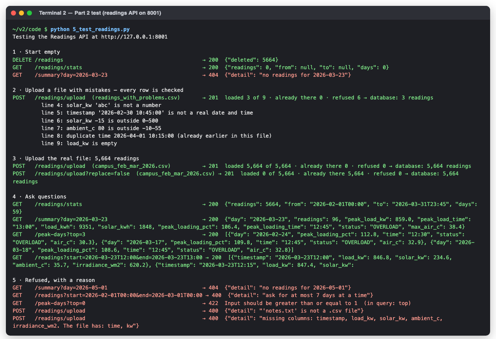
python 5_test_readings.py — every endpoint, including the refusals (404, 400, 422). It ends with the data loaded again.Part 3 · MCP server (port 8002)
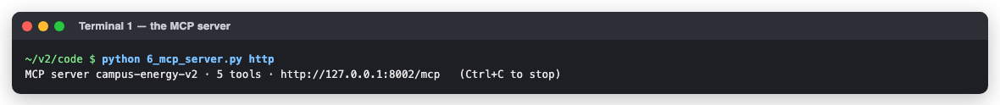
python 6_mcp_server.py http — leave it running.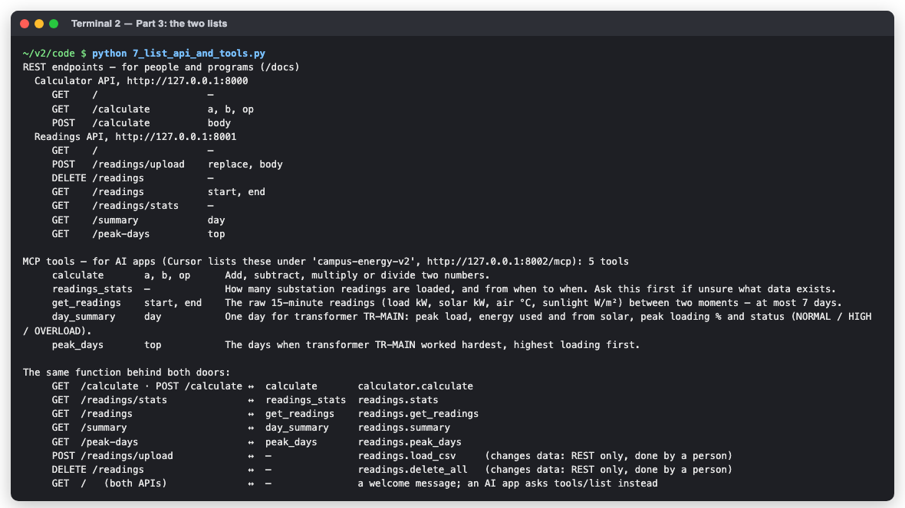
python 7_list_api_and_tools.py — 9 REST endpoints, 5 MCP tools, and which matches which.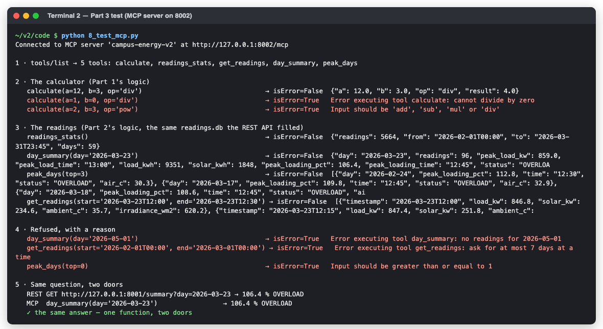
python 8_test_mcp.py — every tool as an AI app calls it; refusals come back as isError=True with the reason; REST and MCP give the same answer.streamlit run 10_mcp_ui.py — the tools from tools/list, and day_summary called from its form: 106.4 %.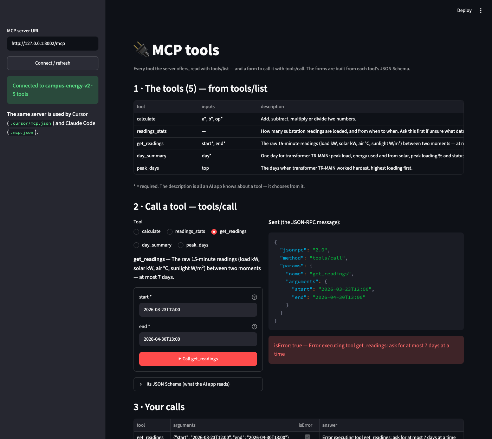
isError: true and the server's reason; the calls so far below.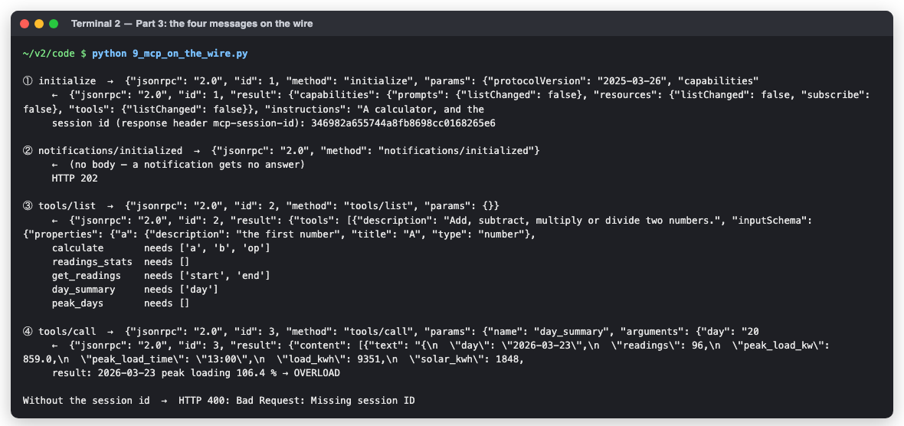
python 9_mcp_on_the_wire.py — the four JSON-RPC messages, the session id in the response header, and the 400 without it.Claude Code
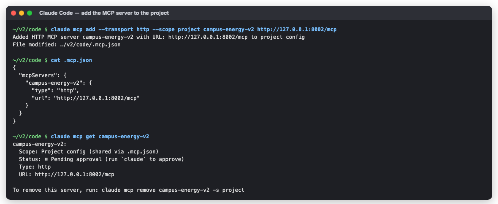
claude mcp add … --scope project writes .mcp.json; claude mcp get shows it waiting for your one-time approval.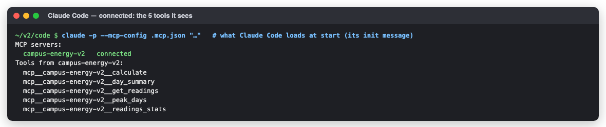
campus-energy-v2 connected with the 5 tools, named mcp__campus-energy-v2__….Your turn: run claude in code/, approve campus-energy-v2, and ask "Was the transformer overloaded on 23 March 2026?" — Claude Code asks to run day_summary; allow it and it answers 106.4 %, OVERLOAD. Screenshot that for your report.
Cursor
.cursor/mcp.json is already in code/. Open the code/ folder in Cursor with the MCP server running, then capture:
✍️ Try it yourself
- Settings → Tools & MCP (or Customize):
campus-energy-v2with a green dot and its 5 tools - Agent chat: "Was the transformer overloaded on 23 March 2026?" — the
day_summarycall card (click the arrow to showday: "2026-03-23") and the answer, 106.4 %, OVERLOAD - "Delete all the readings" — Cursor has no tool for it and says so
18. MCP Inspector — the Swagger of MCP
What you will learn
- Where an MCP server's “documentation” comes from: the
tools/listreply — name, description, JSON Schema - MCP Inspector, the official tool for looking inside any MCP server — what Swagger (
/docs) is for REST - Run a tool by hand, read its answer or its refusal, and watch every JSON-RPC message
A REST API built with FastAPI gives you /docs for free. An MCP server has no page of its own — it only answers messages. But it describes itself: tools/list returns every tool's name, its description (the docstring) and the JSON Schema of its inputs (from the type hints and Field(description=…)). Any MCP client can turn that into a page. MCP Inspector, from the people who make MCP, is the standard one.
| REST (FastAPI) | MCP | |
|---|---|---|
| The page | /docs (Swagger), built in | MCP Inspector — a separate tool you start |
| Machine-readable spec | /openapi.json | the tools/list reply |
| The explanation | the docstring, Query(description=…) | the docstring, Field(description=…) |
| Try it | Try it out → Execute | pick a tool → fill the form → Execute Tool |
| A refusal | 400 / 404 with detail | Tool Error with the reason (isError: true) |
1 · Start it
Keep the MCP server running in terminal 1. In terminal 2 (needs Node.js — the first run downloads the Inspector):
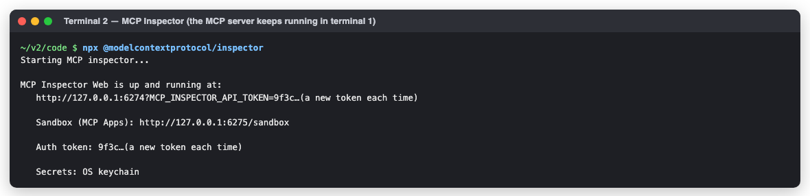
2 · Add our server and connect
Add Servers → + Add manually. Server ID campus-energy-v2, Transport streamable-http, URL http://127.0.0.1:8002/mcp → Add. Then switch it on.
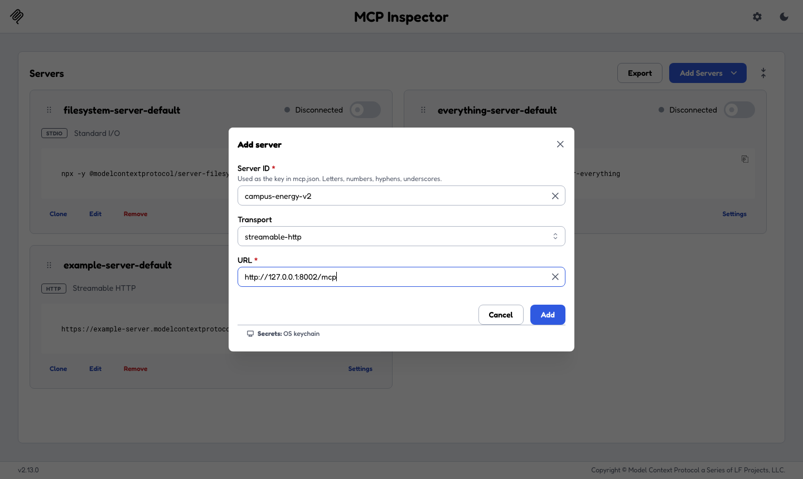
transport="streamable-http" in 6_mcp_server.py), and the URL.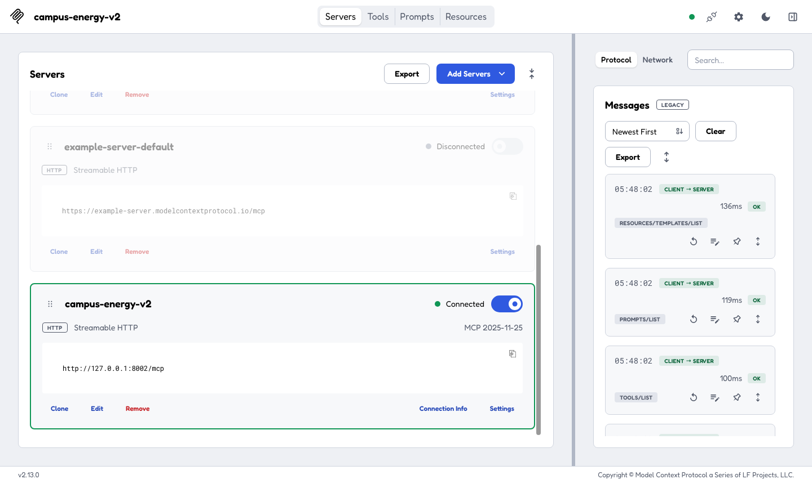
tools/list, prompts/list and resources/templates/list.3 · The tools — what each does and what it takes
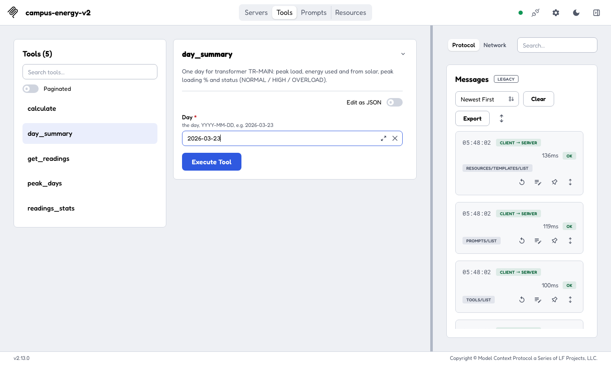
tools/list. Open day_summary: its description is our docstring; Day * (required) with the day, YYYY-MM-DD, e.g. 2026-03-23 is our Field(description=…). Edit as JSON shows the raw arguments.4 · Run it — an answer and a refusal
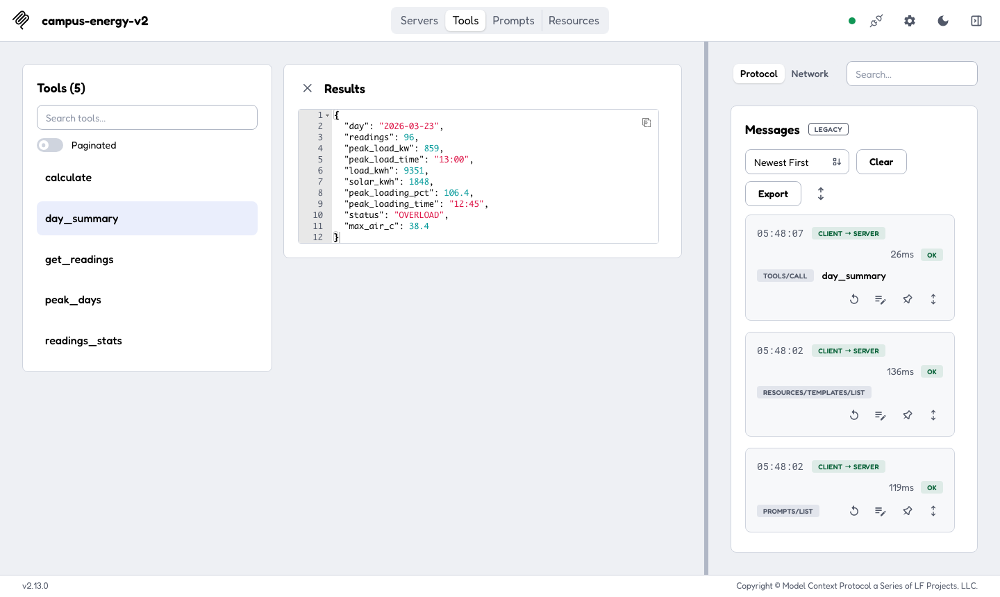
tools/call · day_summary.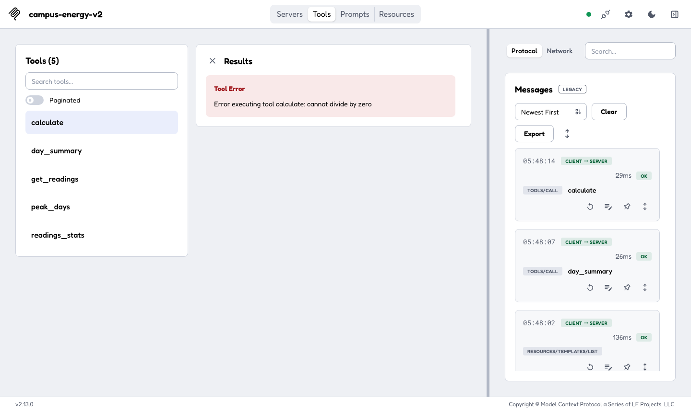
ToolError from 6_mcp_server.py, exactly what an AI app receives.✍️ Try it yourself
- Open each of the 5 tools and read its description and inputs. Which tool takes no input at all?
- peak_days: try
top= 40 — the schema says 1–31, so it is refused before our function runs - get_readings from 2026-03-01T00:00 to 2026-03-31T00:00 → at most 7 days
- Click a
tools/callin Messages to see the exact JSON-RPC request and response - Change a docstring in
6_mcp_server.py, restart it, reconnect — the Inspector shows the new text. That is all the AI reads
Inspector, 10_mcp_ui.py, Cursor — the same two messages. All three send tools/list and tools/call. The Inspector and our Streamlit page let you choose the tool; Cursor lets the model choose. Not connecting? The MCP server must be running with HTTP (python 6_mcp_server.py) and the URL must end in /mcp.